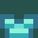

Hratelnost · 0.2
Kmeny a schopnosti
Porovnejte všech dvanáct vestavěných forem a jejich tři schopnosti.
Silné a slabé stránky
| Kmen | Dobro | Špatné |
|---|---|---|
| Více zdraví, brnění a poškození, regeneruje se ve tmě, imunní vůči hladu | o 12 % pomalejší, spálí se na slunci, nemůže spát; maso pouze v plné formě | |
| Silnější šípy, noční vidění, imunní vůči jedu a hladu, měkčí pády | Méně zdraví, výbuchy více bolí, popáleniny na slunci, nemohou spát | |
| Bere méně z výbuchů, rychlejší, extra pancéřování, popínavé rostliny vás nechají na pokoji | Bojíš se koček, oheň bolí víc | |
| Leze po stěnách, prochází pavučinami, skáče výš, vidí ve tmě | Oheň bolí víc, nemůžu nosit helmu ze stupně IV | |
| Kroky přes celé bloky, více zdraví a poškození, šípy vás zasáhnou méně | Voda a déšť hoří | |
 Utopil se | Rychle plave, dýchá a vidí pod vodou | Pomalý na souši, popáleniny na slunci; v plné formě vyschne po třech minutách od vody |
| Oheň ti nemůže ublížit od fáze III, letí od fáze IV, měkčí pády | Voda a déšť tě pálí a uzemňuje, šípy bolí víc | |
| Světelné tělo, noční vidění, nejrychlejší letec ze stupně IV | Méně zdraví, popáleniny na slunci, žádný hrudní plát přes křídla | |
| Plodiny kolem vás rostou rychleji, letí ze stádia IV, sotva cítí pád | Méně zdraví, pouze sladké jídlo, déšť vás uzemňuje | |
| Rychlejší, silněji kouše, syrové a shnilé maso je v pořádku | Pouze maso, strach z lam, oheň bolí víc | |
| Prasata se k vám chovají jako k jednomu z nich, není potřeba žádné zlato. Oheň bolí méně, více zdraví a škod | Nemůžu odhodit nic zlatého, bojím se zombie a zombifikovaných prasat, slabší mimo Nether v plné formě | |
| Rychle plave a plave, žábry, jasné podvodní vidění, hroty, které zraňují útočníky, více brnění a zdraví | Poskakuje pomalu na souši, nevidí tam dobře a od fáze IV dochází vzduch a voda |
Klíče schopností a náklady
R se odemkne ve fázi II, V ve fázi III. Apex schopnost na B vyžaduje plnou formu a 100% výzkum. HUD ukazuje cooldowny a nesplněné podmínky. Neúspěšný pokus nic neutratí.
Blaze, fantom a včela mohou vyletět ze stupně IV skokem dvojitým poklepáním. Let využívá hlad a déšť nebo voda je uzemňuje.
Schopnosti podle kmene
| Kmen | R | V | B (vrchol) |
|---|---|---|---|
| Dead Flesh: rychlá regenerace a odolnost | Ground Slam: zasáhne všechny kolem vás | Horda: nedaleké zombie jdou po tom, kdo vám ublíží | |
| Mrtvé oko: podívejte se na živé věci skrz zdi | Volej: tři šipky | Arrow Storm: devět šípů | |
| Uvolnění tlaku: tlačí všechny zpět | Kamufláž: několik sekund neviditelnosti | Detonace: velký výbuch, který vás stojí 4 HP a bloky nechá na pokoji | |
| Pounce: skok vpřed | Venom Spit: otrávte cíl | Cocoon: zpomaluje a oslabuje cíl | |
| Blink: teleportujte se tam, kam se díváte | Void Stare: zpomaluje a oslabuje cíl | Void Collapse: vtáhne všechny dovnitř a zpomalí je | |
| Utopil se | Water Surge: úprk pod vodou | Undertow: vtáhne všechny dovnitř | The Tide: poškozuje a zpomaluje všechny kolem |
| Ohnivá koule | Fire Salvo: tři ohnivé koule | Inferno: zapálí všechny kolem | |
| Wingbeat: vyskočte a klouzejte dolů | Noční závoj: neviditelnost ve tmě | Dive: střemhlavé bombardování cíle ze vzduchu | |
| Tlukot křídla: vyskočte nahoru a plavte dolů | Bodnutí: jed, stojí půl srdce | The Swarm: blízké včely jdou po tom, kdo vám ublížil | |
| Vůně: vidět živé věci skrz zdi | Leaping Bite: skočte na cíl a kousněte | Smečka: blízcí vlci jdou po tom, kdo vám ublížil | |
| Fury: síla a rychlost | Charge: spěchat na cíl | Warband: připojí se blízcí prasata (pouze Nether) | |
| Sonar: podívejte se na živé věci skrz zdi | Paprsek: laserový zásah z dosahu | Elder Curse: zpomaluje a oslabuje všechny kolem |